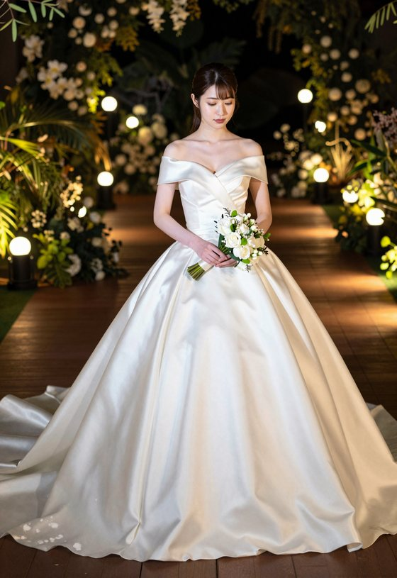

一人で回すスタジオの裏側。AI は準備と検査、人は選ぶことと許可。その境目を、約束ではなく機械で守っている。
 THE MACHINE — ONE GPU, ONE QUEUE
THE MACHINE — ONE GPU, ONE QUEUEどの段を誰が受け持つかを、先に決めてある。AI が書き、機械が回して検査し、人が許可して選ぶ。
 01HUMAN
01HUMAN作りたい一本を話す。雰囲気・場所・曲の気分。
 02AI
02AI場面・台詞・尺・費用の一覧と、投入の台本を書く。
 03HUMAN
03HUMAN一覧を見て、本番に進めてよいものに印を付ける。
 04MACHINE
04MACHINE印と設定の欠けを検査し、通ったものだけ列へ。
 05MACHINE
05MACHINE写真・動画・曲・声。空いた GPU が順に埋める。夜も。
 06MACHINE
06MACHINE話す動画の聞き取り、つなぎ目の音、肌のざらつき。
 07HUMAN
07HUMAN曲は耳で、カットは目で。手足や顔の崩れも最後は人。
 08HUMAN
08HUMAN4K の仕上げは列で。公開のボタンは毎回、人が押す。
AI に任せるほど、人が決める場所をはっきりさせる。許可は口約束ではなく、許可の印がないと機械が通さない形にした。

ルールを書いただけでは、制御とは言えない。AI が実際にやろうとした危ない操作を、その場で機械が止めた記録がある。
52 の会話・11 種類。
全部通過してから使う。
人が見た一覧 215 本の印。
すべて一つの入口から。
人の目が止め、場面の文を直して焼き直した。seed を変えるだけの再生成はしない。

顔検出の検査がビルドを止め、顔が入る位置に直した。写真は同じ一枚。
止めた回数と試験の件数は 2026 年 10 月 8 日、承認つきの本番投入と GPU の仕事は 2026 年 11 月 14 日時点の集計。回数は AI との会話記録（2026 年 6〜10 月）のうち、自動チェックが止めた結果だけを数えた。
機械に任せるのは、数で測れること。採否が感覚に関わる所は、人が選ぶ。


見た目の決まりも、数字も、確認も、同じ考え方で回している。


手元の GPU で何が回せるか、どこを人が見るべきか。いまの環境を送ってください。